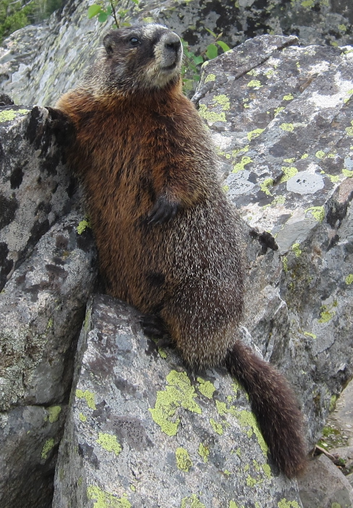
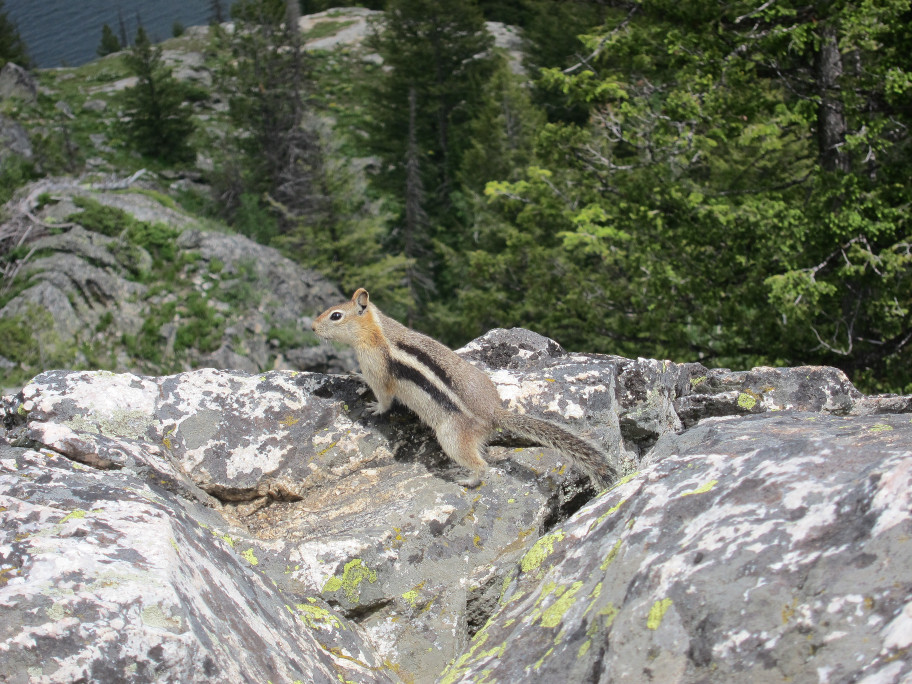

Pictures resize
Pictures resize to fit the browser window both vertically and horizontally. This use of Javascript[1] automatically adjusts the image so you do not have to think about image size when you create the page. This is appropriate for large images.
The same page with these resized to fit pictures can also be on the same page with smaller images not using this. This combination is not explicitly shown in YOW Free Sample but trivial to add images like pictures page to this page.
Scroll the page or jump to the images, Yellow-bellied marmot close-up, Yellow-bellied marmot and Golden-mantled ground squirrel, to see the pictures fitting vertically and horizontally for both portrait and landscape oriented pictures. Resize the browser window to see the picture size adjust both vertically and horizontally. The aspect ratio of the image is preserved.
This automatic resizing is appropriate for large images. These are images which you want limited only by the display area. The image resizes to be limited by either the full width or full height of the display area.
Enough vertical space is kept to display a caption too. A br break separates the caption from the image.
This automatic resizing is not appropriate for smaller images. Small images are less than 100% width and less than 100% height even on a small display. See the pictures page for how to display smaller images.

Yellow-bellied marmot close-up
{kind=link}
This text is between the first and second picture.

Yellow-bellied marmot
This text is between the second and third picture.

Golden-mantled ground squirrel
{kind=link}
This text is after the third picture.